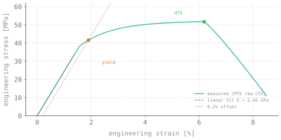

The problem
Two related gaps in the same research group.
One: The lab required 3-point bend data for novel composite characterization but lacked a dedicated test rig. Commercial frames were cost-prohibitive and fully booked.
Two: Material property extraction was performed manually. Each researcher selected their own linear region for Young's modulus, constructed their own 0.2% offset line, and identified their own UTS peak from the same raw MTS data — producing operator-dependent results. Elastomeric print geometry was measured manually with calipers, introducing additional variability.
Why it was hard
Manual measurement error introduces systematic per-operator bias rather than random scatter. This bias is not apparent until independent analyses of the same specimen disagree, undermining confidence in the dataset.
Computer vision in a lab environment presents challenges: inconsistent lighting, low contrast between specimen and background, and large-deformation elastomeric behavior that violates small-displacement tracking assumptions.
The approach
The rig
Designed the 3-point bend fixture in SOLIDWORKS, machined the custom parts, assembled it, and drove the load with a stepper motor under Arduino control.
The measurement
Rather than relying on crosshead displacement, a camera-based Python/OpenCV pipeline tracked specimen displacement directly during bending. Optical measurement of the specimen itself eliminates machine compliance errors — a significant error source in custom-built test frames.
The analysis tool
A Python tool that ingests raw MTS CSVs and automatically generates the stress-strain curve, identifies the linear elastic region for Young's modulus, constructs the 0.2% offset line for yield strength, and locates the UTS peak. Consistent algorithm, consistent results — independent of operator.
Print monitoring
Separate Python/OpenCV and C++ applications tracked thermoset ink profiles during printing — measuring how wall width changed and locating where overhanging structures buckled.

Technical stack
Engineering challenges
Lighting and fixturing
Consistent illumination and rigid camera mounting accounted for the majority of the vision system development effort. Image quality at acquisition determines the ceiling for downstream algorithmic performance.
Automated linear region identification
The toe region at low strain and the gradual transition into yield make linear region selection a subjective judgment — the primary source of inter-operator variability. The automated rule needed to be explicit, defensible, and deterministic.
Tracking elastomers
Large deformation breaks tracking approaches that assume small, rigid motion.
Custom rig compliance
A custom-built test frame introduces uncharacterized compliance. Optical measurement of the specimen rather than crosshead displacement decouples the measurement from fixture deformation.
Results
- Working 3-point bend rig, built for a fraction of commercial cost.
- Optical tracking removed human measurement error from deflection data.
- The analysis tool standardized material property extraction across the entire lab — one method, reproducible numbers.
- Automated elastomeric print buckling analysis, cutting manual processing time substantially.
- Improved data quality and throughput fed directly into two publications in Additive Manufacturing.
What I learned
Standardization across a research group has more impact than individual productivity gains. The value was in establishing a single, shared analysis method.
Building the test instrument provided deeper understanding of measurement uncertainty than using a commercial system — it clarified which aspects of the data were trustworthy and which were artifacts of the apparatus.